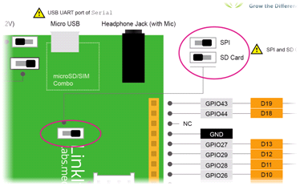

|
   |
SPI
The SPI (Serial Peripheral Interface) API provides for data communication between the processor and various peripheral devices over a synchronous external serial port. On LinkIt ONE, SPI needs the following 3 pins to complete communication (see Table below):
|
Board |
MOSI |
MISO |
SCK |
|
LinkIt ONE |
D11 |
D12 |
D13 |
As many slaves may be connected to one master at the same time, the SS (Slave Select) pin enables the Master to selects the slave to communicate with. When the SS signal of a slave is at low voltage, the master will start communicating with it.
The SPI communication protocol is very flexible; therefore before conducting data exchange using SPI, please pay extra attention to the slaves??configuration tables. Only when relevant parameter settings comply with the demand from the slave can the master and slave start normal data communication. Before using a new slave, please answer the following questions first:
Hardware setup
The SPI and built-in SD card functions are exclusive. Before using the SPI API, make sure the settings switch is correctly set (see Figure below). Please note that once the board is configured to SPI, calling SD APIs may result in unexpected SPI behavior.

Figure : The SPI/SD switch
If you want to use SPI and SD functions at the same time, please use an external SD shield.
On LinkIt ONE, the LinkIt processor can be used as the master only; therefore other peripheral devices can be used as slaves only.
|
Macro |
Description |
|
SPI clock is 1/128 of the system clock. | |
|
SPI clock is 1/16 of the system clock. | |
|
SPI clock is 1/2 of the system clock. | |
|
SPI clock is 1/32 of the system clock. | |
|
SPI clock is 1/4 of the system clock. | |
|
SPI clock is 1/64 of the system clock. | |
|
SPI clock is 1/8 of the system clock. | |
|
SPI data transfer mode 0. | |
|
SPI data transfer mode 1. | |
|
SPI data transfer mode 2. | |
|
SPI data transfer mode 3. |
|
Variable |
Description |
|
The SPI object. |

 Classes
Classes